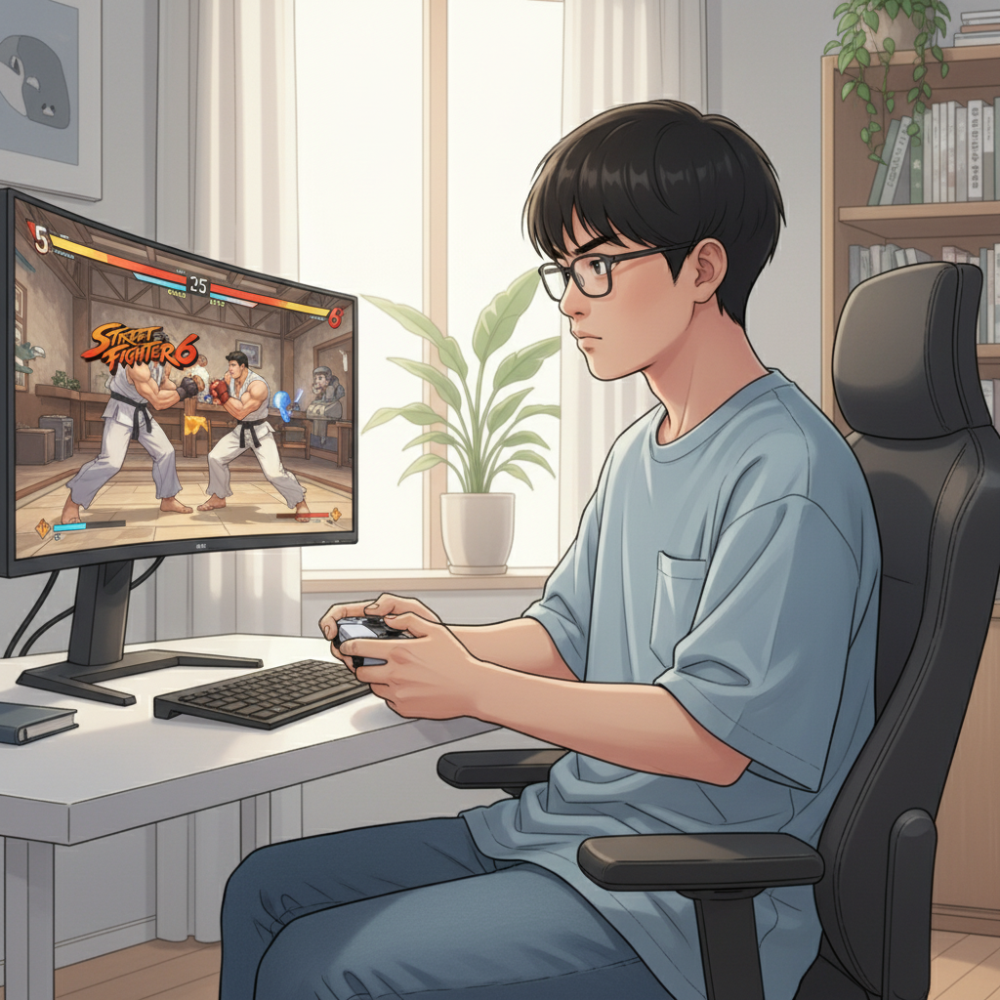
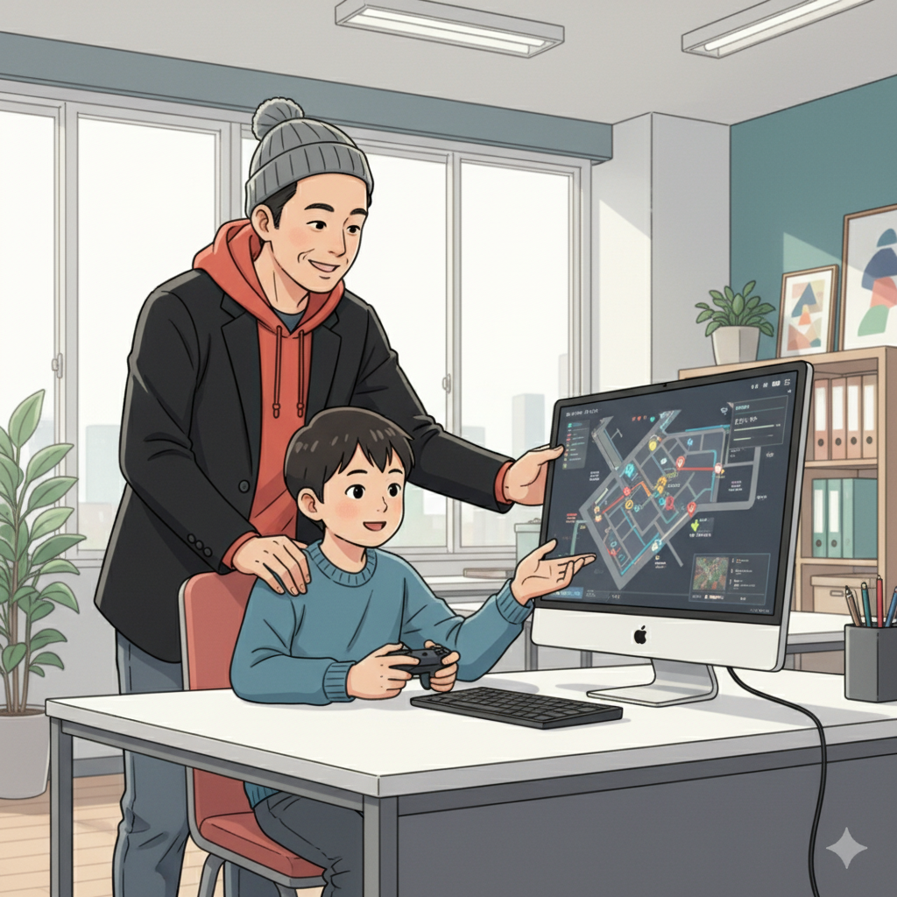
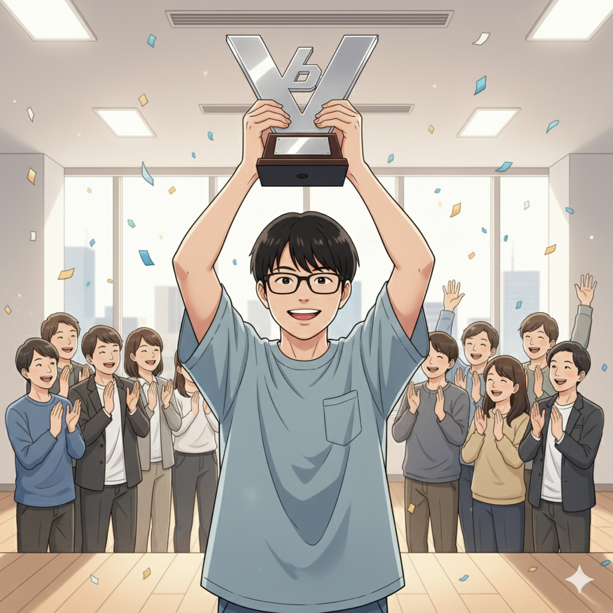
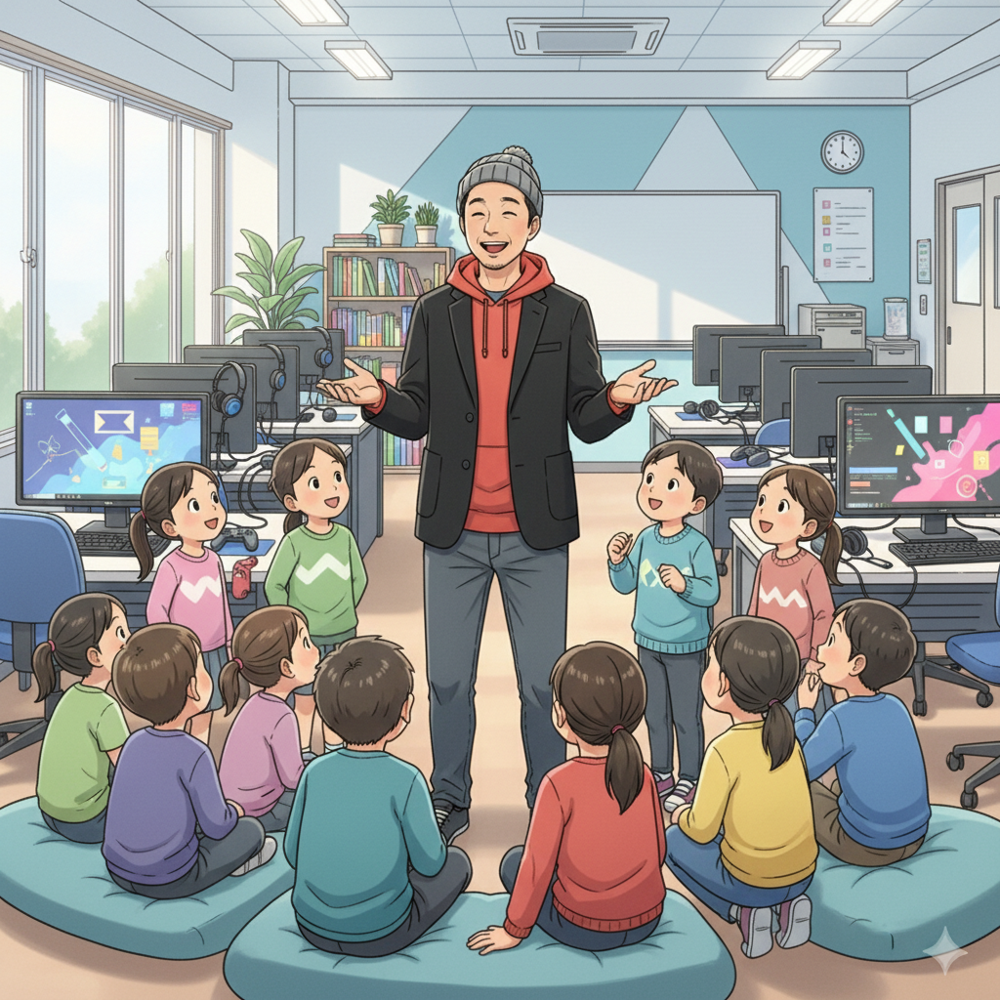

周りとの違いに悩んだ日々、そしてストリートファイター6との出会い（Y君）

「なんでみんなと同じようにできないんだろう…」Y君は小さい頃から、周りの友達との違いを感じていました。授業に集中できなかったり、忘れ物が多かったり…。自信をなくしかけていたY君が出会ったのが、格闘ゲーム、ストリートファイター6（SF6）でした。
SF6の瞬時の判断が求められるスリリングな展開に、Y君は夢中になりました。他のことがなかなか続かないY君でしたが、SF6だけは違いました。気がつけば何時間も画面に向かっていることも。それはまさに、Y君の才能が開花する瞬間だったのです。
得意なことを見つけたY君は、FPSなどの他のeスポーツにも興味を持つようになり、世界が広がっていきました。
集中力と反射神経…発達特性がeスポーツで強みに変わる！（塾頭）

Y君が高校生になったとき、if塾の塾頭と出会いました。塾頭はY君のSF6の才能にすぐに気づき、その集中力と反射神経は、まさに発達特性の賜物だと教えてくれました。
「発達特性は、決して『障害』なんかじゃない。使い方によっては、ものすごい『才能』になるんだ」塾頭の言葉に、Y君は衝撃を受けました。それまで短所だと思っていた特性が、強みになると知ったからです。塾頭はY君に、特性を活かすための具体的な方法を教えてくれました。例えば、集中力が途切れないように、タイマーを使って休憩時間を設ける、反射神経を鍛えるために、簡単なゲームを取り入れるなど、Y君に合ったアドバイスを送りました。
if塾では、Y君のように、発達特性を持つ子どもたちが、それぞれの才能を活かせるように、ICT教育とeスポーツを通じた支援を行っています。eスポーツ 発達障害という言葉が示すように、特性を強みに変えるサポートをしています。
仲間との出会いが自信に！そして、大会優勝へ（Y君、塾長）

if塾でY君は、同じように発達特性を持つ仲間たちと出会いました。互いの悩みや得意なことを共有し、励まし合うことで、Y君は少しずつ自信を取り戻していきました。塾長もまた、ADHD・ASDの診断を受けながらも、自身の経験を活かしてY君をサポートしました。発達障害 AIを活用した学習方法なども取り入れ、Y君の成長を後押ししました。
そしてついに、Y君はSF6の大会で優勝を果たしました！ 努力が実を結んだ瞬間、Y君の目には涙が浮かんでいました。優勝後、Y君はこう語りました。「if塾に出会っていなかったら、今の自分はいなかった。自分の特性を理解し、活かす方法を教えてくれた塾頭や、支え合える仲間たちに出会えたことが、僕の人生を変えてくれた」
Y君の活躍は、他の塾生たちにも大きな勇気を与えています。「自分にもできるかもしれない」と、新たな目標に向かって歩み始める子どもたちが、if塾から次々と生まれています。
特性を「才能」に！自分らしい成長を応援します（塾頭）

if塾は、Y君のように、発達特性を持つ子どもたちが、自分らしい成長を遂げられるように、全力でサポートします。小さな成功体験を積み重ね、自信を育み、仲間との出会いを通じて、人生を豊かにする。それが、if塾の願いです。
もしあなたが、周りとの違いに悩んでいたり、何をやってもうまくいかないと感じているなら、ぜひif塾に遊びに来てください。きっと、あなただけの才能が見つかるはずです。発達特性 強みを活かして、一緒に未来を切り拓きましょう！
if塾は、あなたの可能性を信じています。
🎯 興味を持っていただいた方へ
if塾では、発達特性を持つ子どもたちの「好き」を「才能」に変える教育を行っています。現在の記事内容と実際の活動に大きなズレはありませんが、詳細については直接お問い合わせください。
📌 記事について
この記事は、塾頭による完全自動化への挑戦としてAIが自動生成しています。将来的には塾頭が執筆しているような記事になることを目指しており、現時点では事実と異なる内容が含まれる可能性があります。最新の正確な情報については、お問い合わせフォームよりご確認ください。
🤖 Generated with AI - if塾のブログ自動化プロジェクト